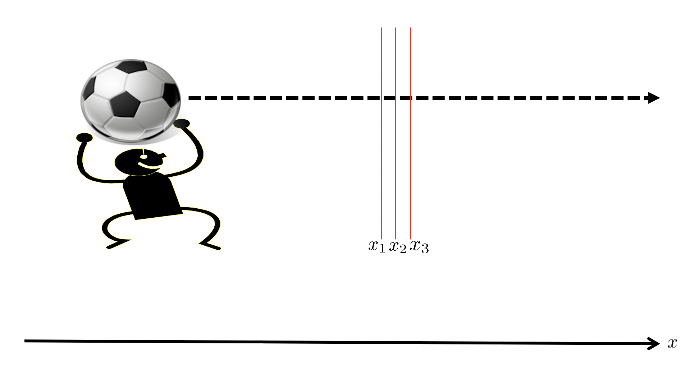

Forrige side🙂 🙁Maksimal aldringPADLET

Du skal nå helt på egenhånd få gjøre denne utledningen en gang til! Men nå skal du anta at t2 er kjent men x2 er ukjent. Du skal altså maksimalisere egentiden Δτ13 en gang til men nå med hensyn på x2 eller da Δx12. Vi skal se at vi da får et noe annet men minst like interessant resultat!